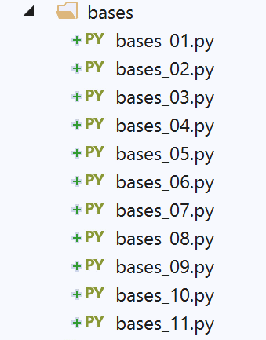

3. Les bases de Python

3.1. Script [bases_01] : opérations élémentaires
Le script [bases_01] présente les premières caractéristiques de Python.
Commentaires
- ligne 2 : le mot clé def définit une fonction ;
- ligne 2 : la fonction reçoit le paramètre [chaine]. On n'indique pas le type du paramètre. Python utilise exclusivement le passage par valeur. Celle-ci diffère selon la donnée :
- pour un type simple (nombre, booléen…), cette valeur est la valeur encapsulée par la donnée (4, True…) ;
- pour un type complexe (liste, classe…), cette valeur est l'adresse de la donnée ;
- lignes 3-4 : le contenu de la fonction. Il est décalé à droite d'une tabulation. C'est cette indentation associée au caractère : de l'instruction def qui définit le contenu de la fonction. Cela est vrai pour toutes les instructions ayant du contenu : if, else, while, for, try, except ;
- ligne 4 : la syntaxe utilisée ici est [print('text1%F1text2%F2…' % data1, data2)] :
- les [%Fi] (ici %s) sont des formats d'affichage :
- %s (string) : pour une chaîne de caractères ;
- %d (decimal) : pour les nombres entiers décimaux signés ;
- %f (float) : format décimal pour les nombres réels ;
- %e (exponentiel) : format exponentiel pour un nombre réel ;
- …
- [data1, data2…] sont les expressions dont on veut afficher la valeur :
- [data1] sera affichée avec le format F1 ;
- [data2] sera affichée avec le format F2 ;
- …
- ligne 10 : Python gère en interne le type des variables. On peut connaître le type d'une variable avec la fonction type(variable) qui rend une variable de type 'type'. L'expression '%s' % (type(variable)) est une chaîne de caractères représentant le type de la variable ;
- ligne 25 : le programme principal. Celui-ci vient habituellement (mais pas nécessairement) après la définition de toutes les fonctions du script. Son contenu est non indenté ;
- ligne 28 : en Python, on ne déclare pas les variables. Python est sensible à la casse. La variable Nom est différente de la variable nom. Une chaîne de caractères peut être entourée de guillemets " ou d'apostrophes '. On peut donc écrire 'dupont' ou "dupont" ;
- ligne 34 : il y a une différence entre un tuple (1,2,3) (notez les parenthèses) et une liste [1,2,3] (notez les crochets). Le tuple est non modifiable alors que la liste l'est. Dans les deux cas, l'élement n° i est noté [i] ;
- ligne 40 : range(n) est le tuple (0,1,2,…,n-1) ;
- ligne 41 : le format %d est utilisé pour les nombres entiers signés ;
- ligne 74 : len(var) est le nombre d'éléments de la collection var (tuple, liste, dictionnaire…) ;
- ligne 84 : la structure [for in …] permet d'itérer une structure itérable. Les listes et les tuples sont des éléments itérables ;
- ligne 86 : les autres opérateurs booléens sont or et not ;
- ligne 93 : fait la somme des nombres >0 de la liste ; Les résultats écran sont les suivants :
3.2. Script [bases_02] : chaînes de formatage
Python 3 a amené une nouvelle façon de formater les chaînes de caractères :
La syntaxe de la chaîne formatée est la suivante :
avec :
- [expri] : une expression ;
- [formati] : le format de l'expression [expri]. Ces formats sont ceux du langage C :
- %d : pour les nombres entiers ;
- %f : notation décimale pour les nombres réels ;
- %e : notation exponentielle pour les nombres réels ;
- %s : pour les chaînes de caractères. C'est le format utilisé lorsqu'aucun format n'est utilisé pour [expri] ;
- %nd, %nf, %ns : affiche [expri] sur n caractères : la chaîne est soit tronquée, soit complétée avec des espaces;
- ligne 7 : [04d], entier sur 4 caractères complétés à gauche avec des zéros;
- ligne 11 : [8.2f], réel décimal sur 8 caractères dont 2 après la virgule ;
- ligne 12 : [.3e], réel sous forme exponentielle avec 3 décimales pour la mantisse ;
- ligne 18 : [20.10s], les 10 premiers caractères d'une chaîne complétée avec des espaces pour faire 20 caractères ; Les résultats de l'exécution sont les suivants :
3.3. Script [bases_03] : changements de types
On s'intéresse ici aux changements de types avec des données de type str (chaîne de caractères), int (entier), float (réel), bool (booléen).
De nombreux changements de type sont possibles. Certains peuvent échouer, comme celui des lignes 46-47 qui essaient de transformer la chaîne 'abc' en nombre entier. On a géré l'erreur avec une structure try / except. Une forme générale de cette structure
est la suivante :
Si l'une des actions du try lance une exception (signale une erreur), il y a branchement immédiat sur la clause except. Si les actions du try ne lancent pas d'exception, la clause except est ignorée. Les attributs Exception et ex de l'instruction except sont facultatifs. Lorsqu'ils sont présents, Exception précise le type d'exception interceptée par l'instruction except et ex contient l’exception qui s’est produite. Il peut y avoir plusieurs instructions except, si on veut gérer différents types d'exceptions dans le même try.
L'instruction finally est facultative. Si elle est présente, les actions du finally sont toujours exécutées qu'il y ait eu exception ou non.
Nous reviendrons sur les exceptions un peu plus loin.
Les lignes 49-61 montrent diverses tentatives pour transformer une donnée de type str, int, float, NoneType en booléen. C'est toujours possible. Les règles sont les suivantes :
- bool(int i) vaut False si i vaut 0, True dans tous les autres cas ;
- bool(float f) vaut False si f vaut 0.0, True dans tous les autres cas ;
- bool(str chaine) vaut False si chaine a 0 caractère, True dans tous les autres cas ;
- bool(None) vaut False. None est une valeur spéciale qui signifie que la variable existe mais n'a pas de valeur. Les résultats écran sont les suivants :
On notera que toutes les données sont des objets, c'est-à-dire des instances de classe. Cela signifie qu'elles peuvent avoir des méthodes. C'est ce que montrent les lignes 63-75 du code. Nous ne cherchons pas ici à expliquer ce que font les méthodes utilisées mais simplement à montrer qu'elles existent.
3.4. Script [bases_04]: portée des variables
Le script [bases_04] montre que Python n'a pas la notion de variable de portée bloc :
Résultats
Commentaires
Les résultats montrent deux choses :
- ligne 4 : la variable [i] du bloc [if] est la même que la variable i utilisée ligne 2 ;
- ligne 6 : la variable [j] est celle initialisée dans le bloc [if] ; Dans certains langages, où on déclare les variables, une variable définie dans un bloc (comme celui des lignes 3-5) n'est pas connue à l'extérieur de celui-ci. En Python, rien de tel.
3.5. Script [bases_05] : listes - 1
Le script [bases_05] est le suivant :
Notes :
- la notation tableau[i:j] désigne les éléments i à j-1 du tableau ;
- la notation [i:] désigne les éléments i et suivants du tableau ;
- la notation [:i] désigne les éléments 0 à i-1 du tableau ;
- ligne 19 : print (%s) % (list1) affiche la chaîne de caractères : "[ list1[0], list1[2]…, list1[n-1]]" ;
- ligne 24 : la notation print ('f{list1}') fait la même chose ; Résultats
3.6. Script [bases_06] : listes - 2
Le code précédent peut être écrit différemment (bases_06) en utilisant certaines méthodes des listes :
Les résultats obtenus sont les mêmes qu'avec la version précédente.
3.7. script [bases_07] : le dictionnaire
Le script [bases_07] montre comment définir et exploiter un dictionnaire, parfois appelé tableau associatif.
Notes :
- ligne 11 : la définition en dur d'un dictionnaire ;
- ligne 15 : conjoints.items() rend la liste des couples (clé,valeur) du dictionnaire conjoints ;
- ligne 20 : conjoints.keys() rend les clés du dictionnaire conjoints ;
- ligne 25 : conjoints.values() rend les valeurs du dictionnaire conjoints ;
- ligne 3 : mari in conjoints rend True si la clé mari existe dans le dictionnaire conjoints, False sinon ;
- ligne 36 : un dictionnaire peut être affiché en une seule ligne. Résultats
Notes :
- on notera aux lignes 16-17 des résultats que les clés et valeurs d'un dictionnaire ne forment pas une liste mais un type 'dict_keys' ;
- lignes 18-19 : un simple changement de type permet de les convertir en un type [list] ;
3.8. script [bases_08] : les tuples
Le tuple a des similitudes avec la liste mais est non modifiable :
Résultats
Notes :
- lignes 17-20 des résultats : montrent qu'un tuple ne peut pas être modifié.
3.9. Script [bases_09] : les listes et dictionnaires à plusieurs dimensions
Le script [bases_09] montre comment définir et exploiter une liste ou un dictionnaire multidimensionnel :
Commentaires
- ligne 7 : multi[i1] est une liste ;
- ligne 18 : valeur est une liste ; Résultats
3.10. Script [bases_10] : liens entre chaînes et listes
Le script [bases_10] montrent comment récupérer dans une liste les éléments d'une chaîne séparés par un même séparateur.
Notes :
- ligne 3 : la méthode chaine.split(séparateur) découpe la chaîne de caractères chaine en éléments séparés par séparateur et les rend sous forme de liste. Ainsi l'expression '1:2:3:4'.split(":") a pour valeur la liste ('1','2','3','4') ;
- ligne 11 : 'separateur'.join(liste) a pour valeur la chaîne de caractères 'liste[0]+separateur+liste[1]+separateur+…'. Résultats
3.11. Script [bases_11] : les expressions régulières
Le script [bases_11] montre comment utiliser des expressions régulières :
Notes :
- noter le module [re] importé en ligne 2. C'est lui qui contient les fonctions de gestion des expressions régulières ;
- ligne 10 : la comparaison d'une chaîne à une expression régulière (modèle) rend le booléen True si la chaîne correspond au modèle, False sinon ;
- ligne 12 : match.groups() est un tuple dont les éléments sont les parties de la chaîne qui correspondent aux éléments de l'expression régulière entourés de parenthèses. Dans le modèle :
- ^.*?(\d+).*?, match.groups() sera un tuple d'un élément parce qu'il y a une parenthèse ;
- ^(.*?)(\d+)(.*?)$, match.groups() sera un tuple de 3 éléments parce qu'il y a trois parenthèses ;
- ligne 21 : une expression régulière littérale est notée r"xxx". C'est le symbole r qui fait de la chaîne une expression régulière ; Les expressions régulières nous permettent de tester le format d'une chaîne de caractères. Ainsi on peut vérifier qu'une chaîne représentant une date est au format jj/mm/aa. On utilise pour cela un modèle et on compare la chaîne à ce modèle. Ainsi dans cet exemple, j m et a doivent être des chiffres. Le modèle d'un format de date valide est alors "\d\d/\d\d/\d\d" où le symbole \d désigne un chiffre. Les symboles utilisables dans un modèle sont les suivants :
Caractère | Description |
\ | Marque le caractère suivant comme caractère spécial ou littéral. Par exemple, "n" correspond au caractère "n" alors que "\n" correspond à un caractère de nouvelle ligne. La séquence "\\" correspond à "\", tandis que "\(" correspond à "(". |
^ | Correspond au début de la chaîne. |
$ | Correspond à la fin de la chaîne. |
* | Correspond au caractère précédent, zéro fois ou plusieurs fois. Ainsi, "zo*" correspond à "z" ou à "zoo". |
+ | Correspond au caractère précédent, une ou plusieurs fois. Ainsi, "zo+" correspond à "zoo", mais pas à "z". |
? | Correspond au caractère précédent, zéro ou une fois. Par exemple, "a?ve?" correspond à "ve" dans "lever". |
. | Correspond à tout caractère unique, sauf le caractère de nouvelle ligne. |
(modèle) | Recherche le modèle et mémorise la correspondance. La sous-chaîne correspondante peut être extraite de la collection match.groups(). Pour trouver des correspondances avec des caractères entre parenthèses ( ), utilisez "\(" ou "\)". |
x|y | Correspond soit à x soit à y. Par exemple, "z|foot" correspond à "z" ou à "foot". "(z|f)oo" correspond à "zoo" ou à "foo". |
{n} | n est un nombre entier non négatif. Correspond exactement à n fois le caractère. Par exemple, "o{2}" ne correspond pas à "o" dans "Bob," mais aux deux premiers "o" dans "fooooot". |
{n,} | n est un entier non négatif. Correspond à au moins n fois le caractère. Par exemple, "o{2,}" ne correspond pas à "o" dans "Bob", mais à tous les "o" dans "fooooot". "o{1,}" équivaut à "o+" et "o{0,}" équivaut à "o*". |
{n,m} | m et n sont des entiers non négatifs. Correspond à au moins n et à au plus m fois le caractère. Par exemple, "o{1,3}" correspond aux trois premiers "o" dans "foooooot" et "o{0,1}" équivaut à "o?". |
[xyz] | Jeu de caractères. Correspond à l'un des caractères indiqués. Par exemple, "[abc]" correspond à "a" dans "plat". |
[^xyz] | Jeu de caractères négatif. Correspond à tout caractère non indiqué. Par exemple, "[^abc]" correspond à "p" dans "plat". |
[a-z] | Plage de caractères. Correspond à tout caractère dans la série spécifiée. Par exemple, "[a-z]" correspond à tout caractère alphabétique minuscule compris entre "a" et "z". |
[^m-z] | Plage de caractères négative. Correspond à tout caractère ne se trouvant pas dans la série spécifiée. Par exemple, "[^m-z]" correspond à tout caractère ne se trouvant pas entre "m" et "z". |
\b | Correspond à une limite représentant un mot, autrement dit, à la position entre un mot et un espace. Par exemple, "er\b" correspond à "er" dans "lever", mais pas à "er" dans "verbe". |
\B | Correspond à une limite ne représentant pas un mot. "en*t\B" correspond à "ent" dans "bien entendu". |
\d | Correspond à un caractère représentant un chiffre. Équivaut à [0-9]. |
\D | Correspond à un caractère ne représentant pas un chiffre. Équivaut à [^0-9]. |
\f | Correspond à un caractère de saut de page. |
\n | Correspond à un caractère de nouvelle ligne. |
\r | Correspond à un caractère de retour chariot. |
\s | Correspond à tout espace blanc, y compris l'espace, la tabulation, le saut de page, etc. Équivaut à "[ \f\n\r\t\v]". |
\S | Correspond à tout caractère d'espace non blanc. Équivaut à "[^ \f\n\r\t\v]". |
\t | Correspond à un caractère de tabulation. |
\v | Correspond à un caractère de tabulation verticale. |
\w | Correspond à tout caractère représentant un mot et incluant un trait de soulignement. Équivaut à "[A-Za-z0-9_]". |
\W | Correspond à tout caractère ne représentant pas un mot. Équivaut à "[^A-Za-z0-9_]". |
\num | Correspond à num, où num est un entier positif. Fait référence aux correspondances mémorisées. Par exemple, "(.)\1" correspond à deux caractères identiques consécutifs. |
\n | Correspond à n, où n est une valeur d'échappement octale. Les valeurs d'échappement octales doivent comprendre 1, 2 ou 3 chiffres. Par exemple, "\11" et "\011" correspondent tous les deux à un caractère de tabulation. "\0011" équivaut à "\001" & "1". Les valeurs d'échappement octales ne doivent pas excéder 256. Si c'était le cas, seuls les deux premiers chiffres seraient pris en compte dans l'expression. Permet d'utiliser les codes ASCII dans des expressions régulières. |
\xn | Correspond à n, où n est une valeur d'échappement hexadécimale. Les valeurs d'échappement hexadécimales doivent comprendre deux chiffres obligatoirement. Par exemple, "\x41" correspond à "A". "\x041" équivaut à "\x04" & "1". Permet d'utiliser les codes ASCII dans des expressions régulières. |
Un élément dans un modèle peut être présent en 1 ou plusieurs exemplaires. Considérons quelques exemples autour du symbole \d qui représente 1 chiffre :
modèle | signification |
\d | un chiffre |
\d? | 0 ou 1 chiffre |
\d* | 0 ou davantage de chiffres |
\d+ | 1 ou davantage de chiffres |
\d{2} | 2 chiffres |
\d{3,} | au moins 3 chiffres |
\d{5,7} | entre 5 et 7 chiffres |
Imaginons maintenant le modèle capable de décrire le format attendu pour une chaîne de caractères :
chaîne recherchée | modèle |
une date au format jj/mm/aa | \d{2}/\d{2}/\d{2} |
une heure au format hh:mm:ss | \d{2}:\d{2}:\d{2} |
un nombre entier non signé | \d+ |
un suite d'espaces éventuellement vide | \s* |
un nombre entier non signé qui peut être précédé ou suivi d'espaces | \s*\d+\s* |
un nombre entier qui peut être signé et précédé ou suivi d'espaces | \s*[+|-]?\s*\d+\s* |
un nombre réel non signé qui peut être précédé ou suivi d'espaces | \s*\d+(.\d*)?\s* |
un nombre réel qui peut être signé et précédé ou suivi d'espaces | \s*[+-]?\s*\d+(.\d*)?\s* |
une chaîne contenant le mot juste | \bjuste\b |
On peut préciser où on recherche le modèle dans la chaîne :
modèle | signification |
^modèle | le modèle commence la chaîne |
modèle$ | le modèle finit la chaîne |
^modèle$ | le modèle commence et finit la chaîne |
modèle | le modèle est cherché partout dans la chaîne en commençant par le début de celle-ci. |
chaîne recherchée | modèle |
une chaîne se terminant par un point d'exclamation | !$ |
une chaîne se terminant par un point | \.$ |
une chaîne commençant par la séquence // | ^// |
une chaîne ne comportant qu'un mot éventuellement suivi ou précédé d'espaces | ^\s*\w+\s*$ |
une chaîne ne comportant deux mot éventuellement suivis ou précédés d'espaces | ^\s*\w+\s*\w+\s*$ |
une chaîne contenant le mot secret | \bsecret\b |
Les sous-ensembles d'un modèle peuvent être "récupérés". Ainsi non seulement, on peut vérifier qu'une chaîne correspond à un modèle particulier mais on peut récupérer dans cette chaîne les éléments correspondant aux sous-ensembles du modèle qui ont été entourés de parenthèses. Ainsi si on analyse une chaîne contenant une date jj/mm/aa et si on veut de plus récupérer les éléments jj, mm, aa de cette date on utilisera le modèle (\d\d)/(\d\d)/(\d\d).
Résultats du script